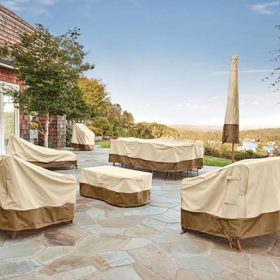
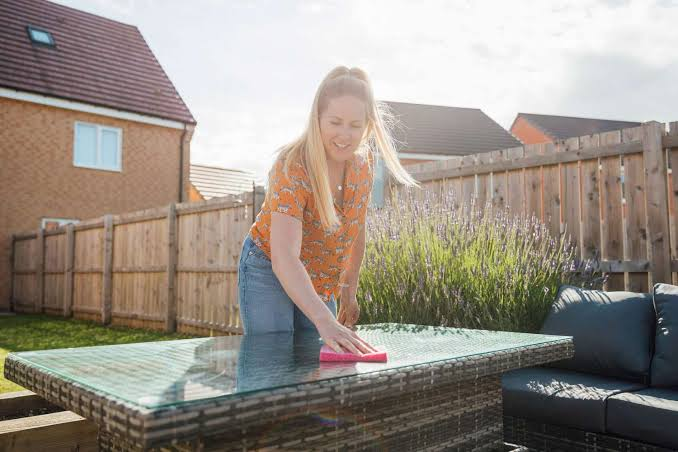

How to Care for Patio Furniture
Taking care of patio furniture can help it stay comfortable and attractive for a longer time. Outdoor furniture is exposed to sunlight, rain, wind, and other weather conditions. Regular cleaning can help remove dirt, dust, and other debris from the furniture. Different materials may require different cleaning methods and products. Cushions and pillows should also be cleaned regularly to keep them fresh and comfortable. Furniture covers can be used to protect outdoor furniture when it is not being used. With regular care and maintenance, patio furniture can remain a useful part of an outdoor space for many years.

Cleaning Your Patio Furniture
Cleaning patio furniture regularly is one of the easiest ways to keep it looking good. A soft cloth or brush can be used to remove dirt and dust from many outdoor furniture surfaces. Mild soap and water can also be used to clean some types of furniture. Cushions should be checked for cleaning instructions before using any cleaning products. It is important to allow furniture and cushions to dry completely after cleaning. Keeping furniture clean can also help prevent stains and buildup from becoming difficult to remove. A simple cleaning routine can make outdoor furniture easier to maintain throughout the year.

Get Your Supplies At
2180 Gunbarrel Rd
Chattanooga, TN 37421
(423)954-2400
For more information about caring for outdoor furniture, visit these websites:
Home Depot Patio Furniture CareLowe's Patio Furniture Care